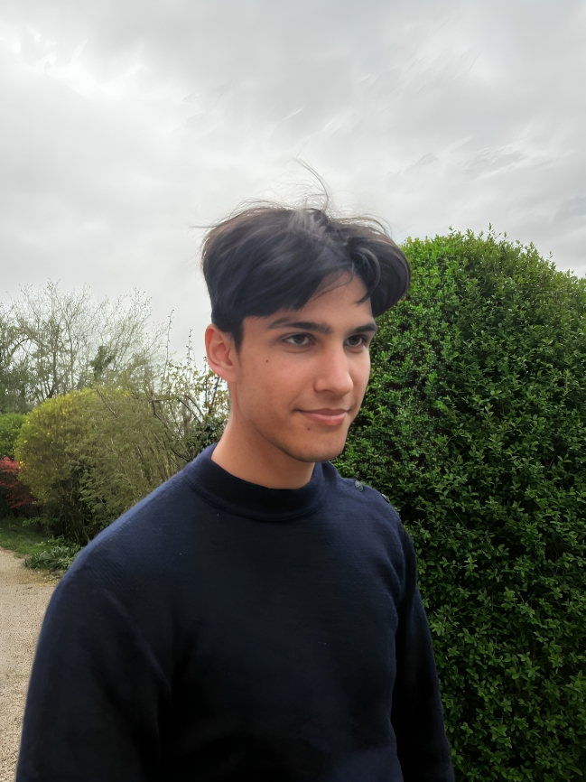

01. About Me
Hello There ! My name is William and I enjoy improving things using AI.
My interest for this matter started when I was a child and I was playing video games. I was always fascinated by the dialogues between the characters and the player. I was always wondering how we could improve them. I thought that coding every dialogue line would be simple, but I realized that it would take an incredible amount of time for each NPC. Then I learned about AI and suddenly, everything seemed possible. Not only for videogames, but also for almost everything else.
I aim to become a Machine Learning engineer or a Deep learning engineer. My goal is to work in a big company to be able to work on big scale projects that will be directly used by people. But for now I am looking for 6-12 months internship.
- Unsupervised & Supervised learning
- Tensorflow Keras
- Scikit-learn
- Pandas
- Matplotlib
- OpenCV

02. My Projects
Image recommendation system
2024
- A machine learning image recommendation system based on previous choices by the user. Used supervised and unsupervised learning as well as some deep learning models.
-
This project involved the application of the following programming skills: Pandas, Tensorflow Keras, Scikit-learn


Space Invaders
2022
- A little space invaders project in python, based on the theme of music.
-
This project involved the application of the following programming skills: python, Object oriented programming, tkinter


Mapping robot
2024
- A robot controlled by a pc interface that can map a room and detect obstacles. It can send the video feed to the interface and can detect shapes such as red squares. It can also recognize a face. Used OpenCV and deepface.
-
This project involved the application of the following programming skills: Flask, OpenCV, Tensorflow


Python openGL project
2023
- A game programming project in python, using the pyOpenGL library. It's a first êrson shooter in a maze with different guns and a monster to fight.
-
This project involved the application of the following programming skills: python, pyOpenGL, Computer graphics

This very website
2024
- A portfolio website creation project in html, css and javascript. I let my imagination run its looks.
-
This project involved the application of the following programming skills: HTML, CSS, Javascript


03. Education
- 2022-2024
- 2019-2022
- 2019
Master's Degree in Artificial Intelligence
University of Paris-Saclay
- Studying advanced topics in Machine Learning and Deep Learning.
- Research project on Computer Vision and Natural Language Processing.
Bachelor's Degree in Computer Science
University of Paris-Saclay
- Core subjects: Programming, Algorithms, Data Structures, Databases.
- Developed a collaborative coding platform as part of a team project.
High School Diploma in Science
Lycée International de Saint-Germain-en-Laye
- Specialization in Mathematics and Physics.
- Participated in national science fairs and competitions.
About me
Hello There ! My name is William and I enjoy improving things using AI. My interest for this matter started when I was a child and I was playing video games. I was always fascinated by the dialogues between the characters and the player. I was always wondering how we could improve them. I thought that coding every dialogue line would be simple, but I realized that it would take an incredible amount of time for each NPC. Then I learned about AI and suddenly, everything seemed possible. Not only for videogames, but also for almost everything else. I aim to become a Machine Learning engineer or a Deep learning engineer. My goal is to work in a big company to be able to work on big scale projects that will be directly used by people. But for now I am looking for 6-12 months internship.
Let's dive into my world !